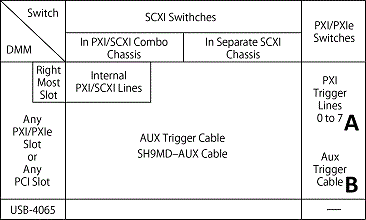

在将多个测试点连接到数字万用表 (DMM) 的应用中，可能适合在测试点和 DMM 之间加入一个开关来路由信号。当连接时间需要与 DMM 同步时，可以使用扫描。要确定您的数字万用表是否可以在多点扫描操作期间与 NI 开关交换信号，请参阅NI 数字万用表帮助中的扫描开关模块主题。使用 NI DMM 扫描 NI 开关时，以下因素会影响您的扫描设置：
有关如何选择适合您需要的扫描设置的详细信息，请参阅单模块扫描和多模块扫描。
|
注意 某些设备可能不支持扫描。有关支持的功能的更多信息，请参阅您的设备手册。 |
NI 开关可用的触发输入和输出，连同您的系统和扫描选择，将决定触发信号如何在 NI 开关和 NI DMM 之间发送。下表列出了所有 NI 开关的触发输入和输出选项。
| 转变 | INPUT 触发输入 |
OUTPUT 触发输出 |
|---|---|---|
| PXI-2501 PXI-2503 PXI/PXIe-2529 PXI-2530 PXI-2530B PXI/PXIe-2543 PXI-2566 PXI-2567 PXI/PXIe-2593 |
所有 PXI 触发，前 |
|
| PXI-2510 PXI/PXIe-2512 PXI/PXIe-2514 PXI/PXIe-2515 PXI/PXIe-2527 PXI/PXIe-2531 PXI/PXIe-2532 PXI/PXIe-2532B PXI-2533 PXI-2534 PXI-2535 PXI-2536 PXI-2545 PXI-2546 PXI-2547 PXI-2548 PXI-2549 PXI-2554 PXI-2555 PXI-2556 PXI-2557 PXI-2558 PXI-2559 PXI-2564 PXI-2565 PXI-2568 PXI/PXIe-2569 PXI-2570 PXI-2571 PXI/PXIe-2575 PXI-2576 PXI-2584 PXI-2585 PXI-2586 PXI-2590 PXI-2591 PXI-2594 PXI-2595 PXI-2596 PXI-2597 PXI-2598 PXI-2599 PXI-2720 PXI-2722 PXIe-2725 PXIe-2727 |
所有 PXI 触发 |
|
| PXIe-2524 PXIe-2525 PXIe-2526 PXIe-2737 PXIe-2738 PXIe-2739 PXIe-2746 PXIe-2747 PXIe-2748 NI 2810 NI 2811 NI 2812 NI 2813 NI 2814 NI 2815 NI 2816 3 NI 28 |
不支持触发 |
|
在哪里
PXI 触发是指 PXI 触发线 0-7
Front指前面板或接线端子
您可以根据 DMM、开关和使用的电缆对不同的 DMM/开关系统进行分类。下图用字母表示每个可能的系统。

系统分类如下：
下表显示了每个 NI 开关的扫描功能。S 或 H 后的数字表示设置编号。F表中的链接将您引导至多模块扫描设置。对于单模块设置，请参阅单模块扫描。
| 开关 | System A PXI 触发线 |
系统 B AUX 触发电缆 |
|||
|---|---|---|---|---|---|
| PXI-2501 PXI-2503 PXI/PXIe-2529 PXI-2530 PXI-2530B PXI/PXIe-2543 PXI-2566 PXI-2567 PXI/PXIe-2593 |
S1、H2 |
S2 , H4 |
|||
| PXI-2510 PXI/PXIe-2512 PXI/PXIe-2514 PXI/PXIe-2515 PXI/PXIe-2527 PXI/PXIe-2531 PXI/PXIe-2532 PXI/PXIe-2532B PXI-2533 PXI-2534 PXI-2535 PXI-2536 PXI-2545 PXI-2546 PXI-2547 PXI-2548 PXI-2549 PXI-2554 PXI-2555 PXI-2556 PXI-2557 PXI-2558 PXI-2559 PXI-2565 PXI-2568 PXI/PXIe-2569 PXI-2570 PXI-2571 PXI/PXIe-2575 PXI-2576 PXI-2584 PXI-2590 PXI-2591 PXI-2594 PXI-2595 PXI-2596 PXI-2597 PXI-2598 PXI-2599 PXI-2720 PXI-2722 PXIe-2725 PXIe-2727 |
S1、H2 |
||||
| NI 2810 NI 2811 NI 2812 NI 2813 NI 2814 NI 2815 NI 2816 NI 2817 NI 2833 NI 2834 |
不支持扫描 |
||||
| 其中S是同步扫描，H是握手 H*表示仅 NI 407 x支持握手 |
|||||
 提交有关此主题的反馈。
提交有关此主题的反馈。
访问ni.com/support以获得技术支持。